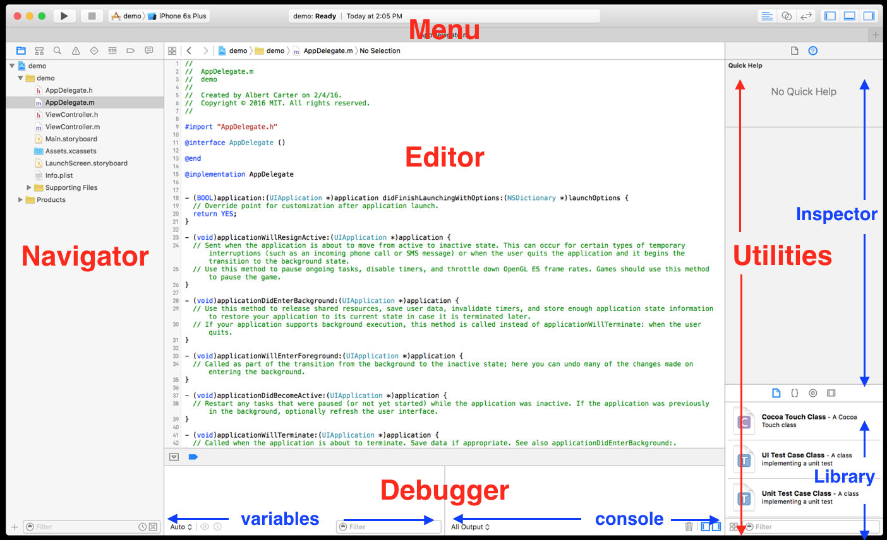
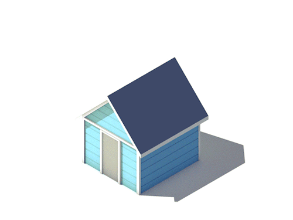
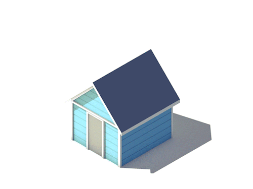

In this lab, we cover the basics of the xCode IDE, the iPhone simulator, xCode Documentation, and Objective-C. By the end of lab, we'll have built a simple iPhone appliation that displays weather from the wunderground.com API
To complete this lab, you'll need to download xCode 7.2 or work on a lab computer.
First, a little about xCode's layout:
Some helpful xCode shortcuts and tips
| View Documentation: | ⌥+Click |
| Open Docs: | ⌘+⇧+0 |
| Go to Definition: | ⌘+Click |
| Open file Quickly: | ⌘+⇧+O |
⌘ = Command | ⌥ = Option | ⇧ = Shift
Some helpful iPhone simulator shortcuts and tips
| Press Home Button: | ⇧⌘+H |
| Rotate Left | ⌘← |
| Rotate Right | ⌘→ |
| If the keyboard isn't appearing/disapperaing as expected: | Hardware -> Keyboard |
Xcode Documentation
Shortcut: ⌘+⇧+0
It's kind of amazing.
It syncs locally, which takes a while
 But once it's downloaded, it's crazy fast.

It includes ready-to-build example projects for downloads.
You can get to object documentation by option+clicking the object in question:
⌥+Click
But once it's downloaded, it's crazy fast.

It includes ready-to-build example projects for downloads.
You can get to object documentation by option+clicking the object in question:
⌥+Click